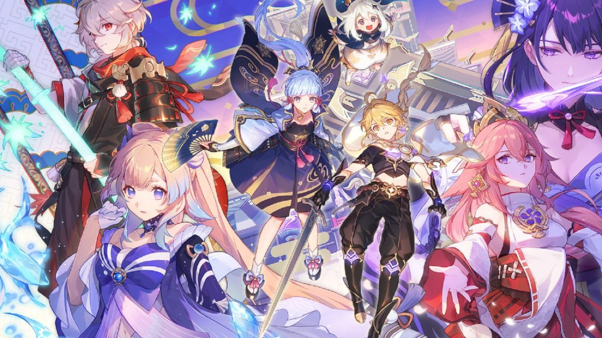

The Anniversary Issue
As to how beautiful the game sounds at the beginning,
it’s not the situation right now.
On August 30, 2021, MiHoYo posted the anniversary
rewards of the game on their Facebook page.
Although anniversary rewards, in general, are
often exciting and big, it was not the case for
Genshin Impact.
The main rewards of the anniversary were 10
Intertwined Fates, which is used for wishing
for the characters on the gacha system in the
game, along with a couple of web events.
Unfortunately, the people of the community
were unsatisfied with the rewards, because
they were too low, considering the amount of
popularity the game has and the probability
of getting their desired characters. The
anticipated rewards of the players were a
free 5-star of their choice. Despite this,
the people of the community still had hope
and faith in the company, thinking that there
will be last minute-surprise anniversary
awards at the date of the anniversary,
which is September 28.
This hope did not last long though, as MiHoYo hasn’t
said anything about the anniversary awards since then.
People have been discussing the anniversary controversy,
and different predictions/assumptions came up. Some
people think that it has something to do with the new
Chinese law, which states that people under 18 years
old can only play video games for one hour at weekends.
This was instantly rejected by the community. The
assumption that most people believed in is that there
will be last-minute surprise rewards on the day of the
anniversary, which is the most logical assumption they
would’ve made.
The day of the anniversary came, but unfortunately
for the community, there were no surprise rewards
from the game. This is when the people of the
community raged and did various kinds of things.